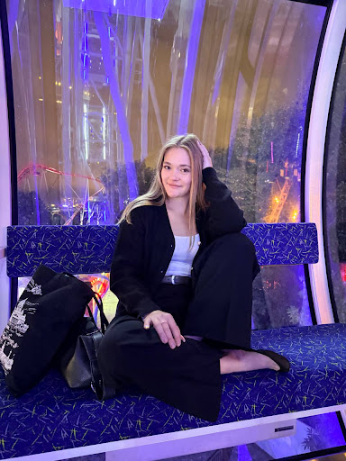
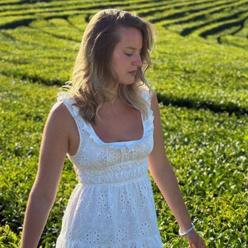

Спецвыпуск · 21 год
Викулек
Клубный выпуск
18 ноября 2026 · село Русиново
Содержание
Восемь полос
Что внутри номера
- 01Клуб любимых подругСоня, Полина, Кира, Вилена, Нютик03
- 02Послание «Милка»Кассета Side A / Side B · ПИН 160504
- 03Древо семьи · РусиновоСкрапбук, портрет маслом, ретро-ТВ05
- 04Оракул пушистых силВильзивул · Макс · Абадон06
- 05Космос NASA, 2005Созвездие Скорпиона07
- 06Секретики и студияСейф Жулика · письмо в 22 года08
ВИКУЛЕК №21Содержание02
Глава 01 · стр. 03
Клуб любимых подруг
Пять человек, которые всегда рядом

Соня, Полина, Кира, Вилена и Нютик — клуб со своими тостами, CD-микстейпами и сценарием вечеринки «Party Mode 4».
«Викулек! С днём рождения, моя дорогая! Желаю океан счастья, горы смеха и море любви!» — Соня
ВИКУЛЕК №21Клуб подруг03
Глава 02 · стр. 04
Послание «Милка»
Кассета · сторона A и B
Кассета вложена в номер целиком.
Сторона A открывается сразу. Чтобы услышать сторону B, нужен четырёхзначный код — день вашего знакомства.
Введите 1605, и полоса развернётся в расшифрованное письмо.
«Моя самая любимая девочка, Викулек!» — расшифрованный текст стороны B
ВИКУЛЕК №21Послание «Милка»04
Глава 03 · стр. 05
Древо семьи · Русиново
Откуда всё началось

Село Русиново встречало каждое лето запахом свежескошенной травы, сладкой малиной прямо с куста и горячими бабушкиными пирожками.
Здесь Викулек делала первые шаги и училась любить этот мир всем сердцем.
ВИКУЛЕК №21Русиново05
Глава 04 · стр. 06
Оракул пушистых сил
Тёмный пушистый триумвират

Вильзивул — границы. Макс — кайф. Абадон — тайны и сладкий сон.
«Вселенский кристалл заряжен на 100%! В твои 21 год ожидается море вкусностей, радости и безграничной любви!» — Макс · Хранитель Кайфа
ВИКУЛЕК №21Оракул06
Глава 05 · стр. 07
Космос NASA, 2005
Архивы Hubble · созвездие Скорпиона

18 ноября 2005 года телескопы Hubble запечатлели глубины космических сияний. Вселенная сияла ярче обычного, встречая рождение Викулька.
ВИКУЛЕК №21Космос07
Глава 06–07 · стр. 08
Секретики и студия
Сейф Жулика · письмо в 22 года
Лис-Жулик спрятал архив за кодовым словом «черемшить».
«Пусть твои 21 будут самыми яркими, дерзкими и незабываемыми. Безумно люблю тебя!» — письмо, которое откроется через год
Сделай полароид, напиши себе в 22 года и сохрани этот момент.
ВИКУЛЕК №21Финал08
Клик по правой половине — вперёд, по левой — назад. Клавиши ← →, Home и End тоже листают номер.
Вариант B · что здесь сделано
Перелистываемый номер
- Ось — взаимодействие, а не вид. Номер физически перелистывается: каждый лист поворачивается на 180° вокруг корешка. Скролла нет вообще.
- Обложка снова обложка. Первая полоса — крупный номер выпуска, как на журнале в киоске, а не блок «герой» с кнопкой.
- Фиксированный объём. Ровно 8 полос: каждая глава сжата до одной страницы. Это заставляет выбирать, что действительно важно, — и номер читается целиком.
- Тёмный неон сохранён. Это исходная палитра проекта (клубный Y2K), поэтому вариант ощущается «своим», а не перекрашенным.
- Доступность по умолчанию. Кнопки, статус страницы в
role="status", стрелки и Home/End, точки-переходы с фокусом, отключение анимации приprefers-reduced-motion.